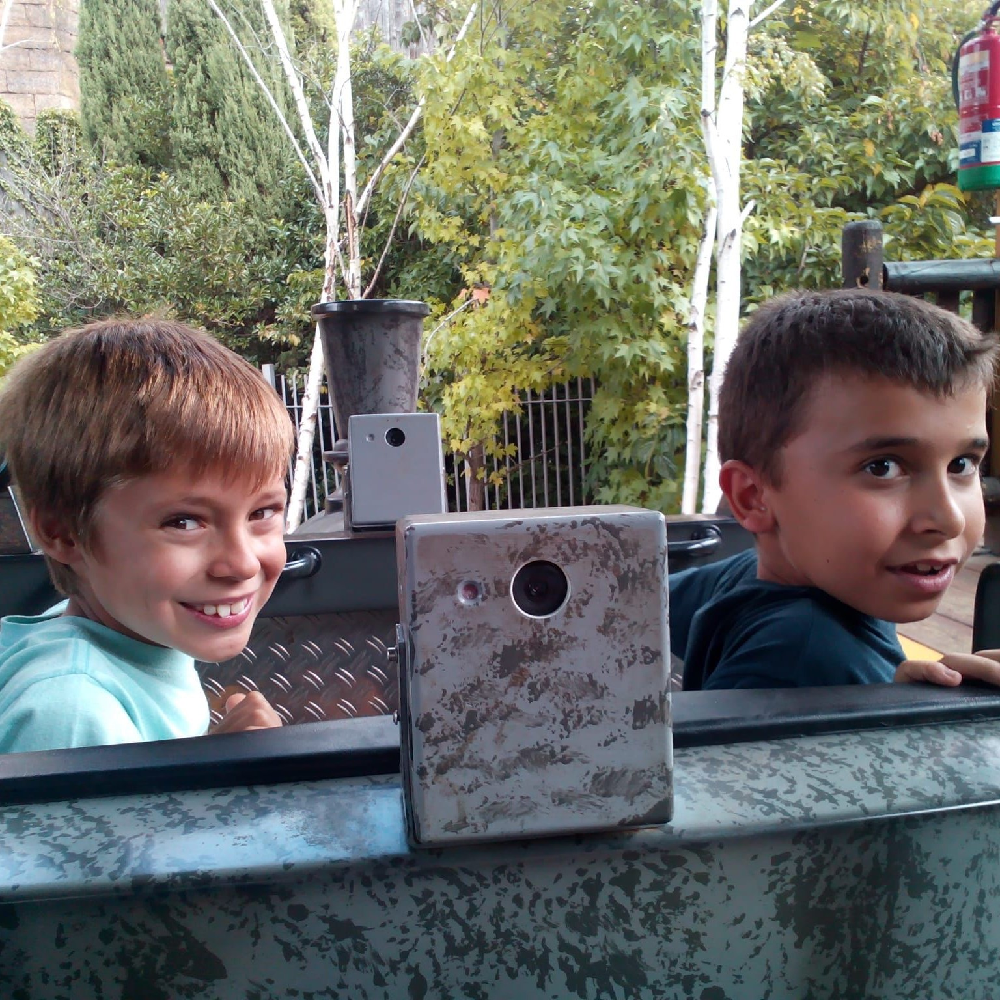
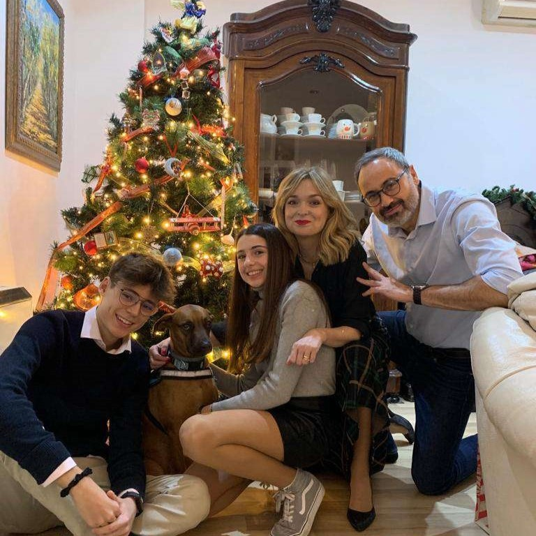
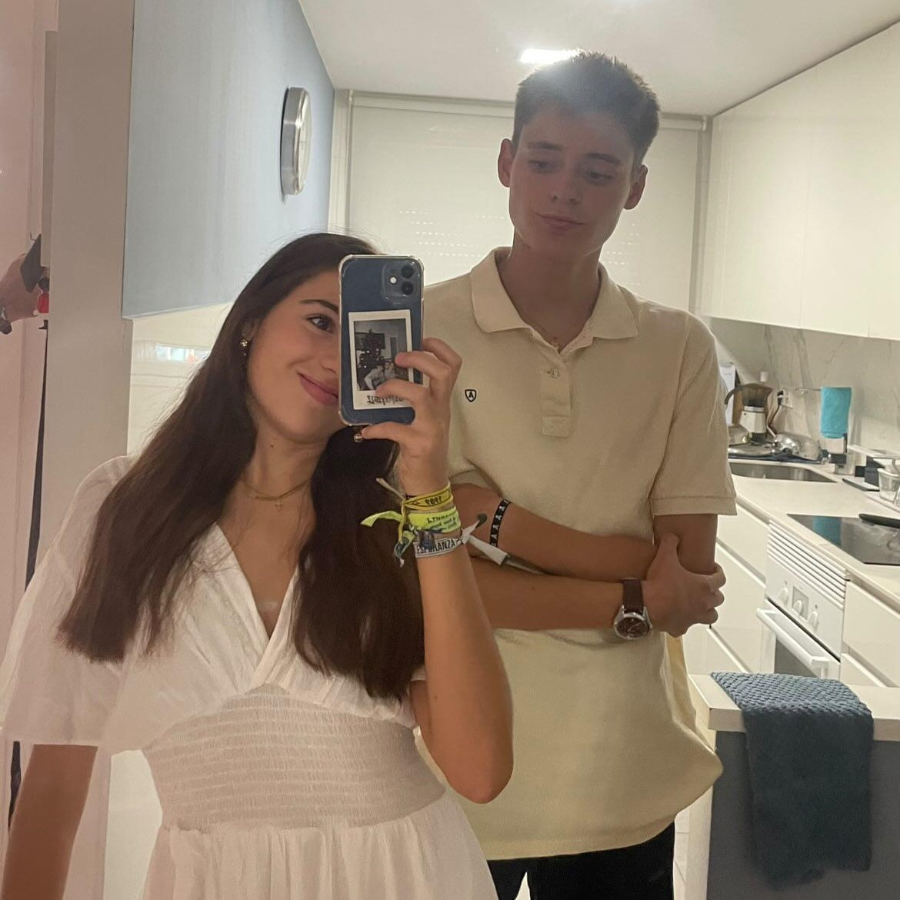
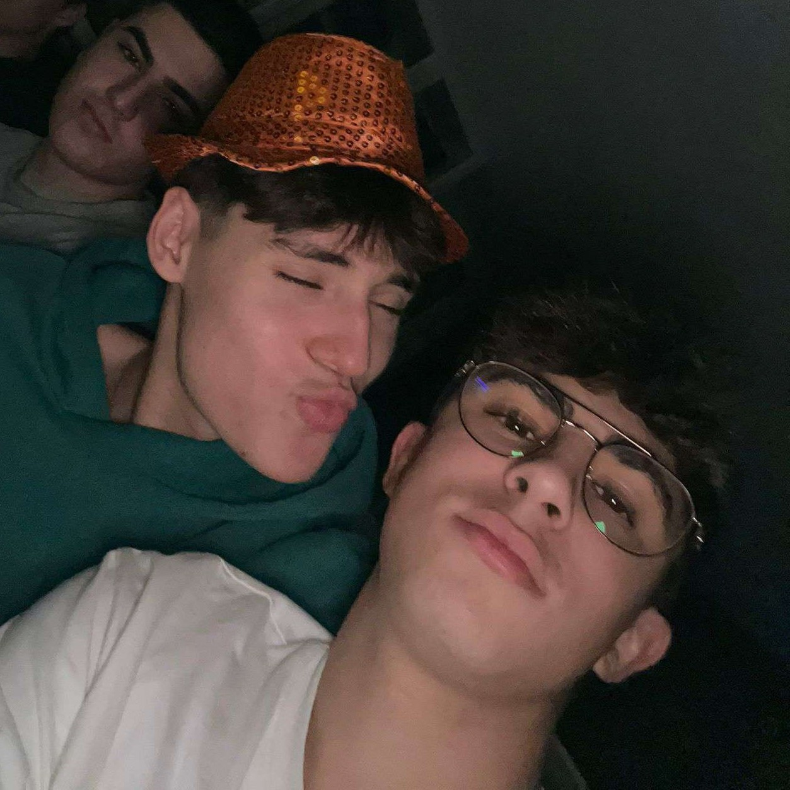
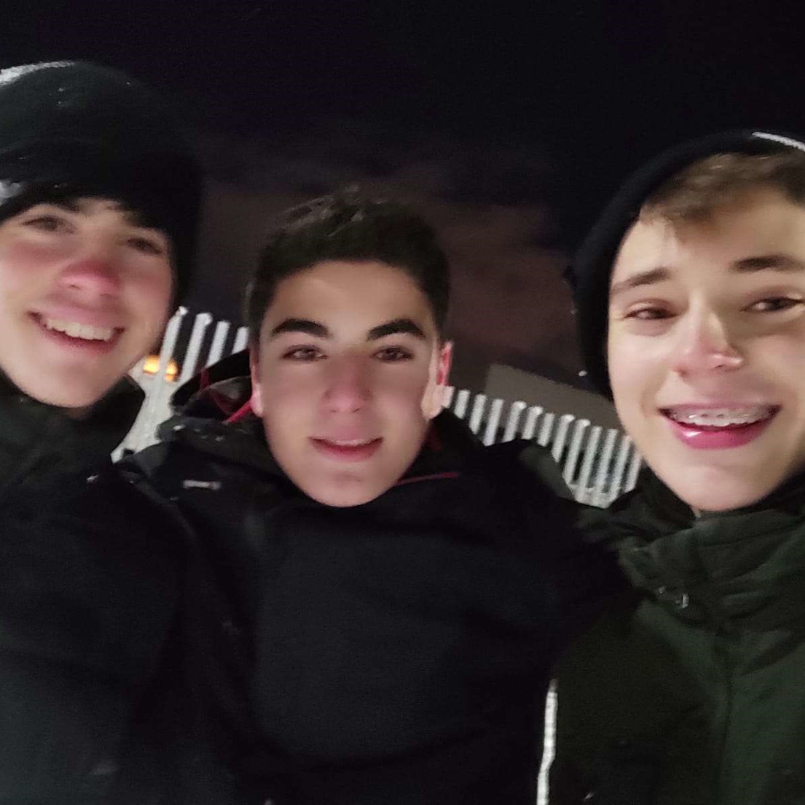
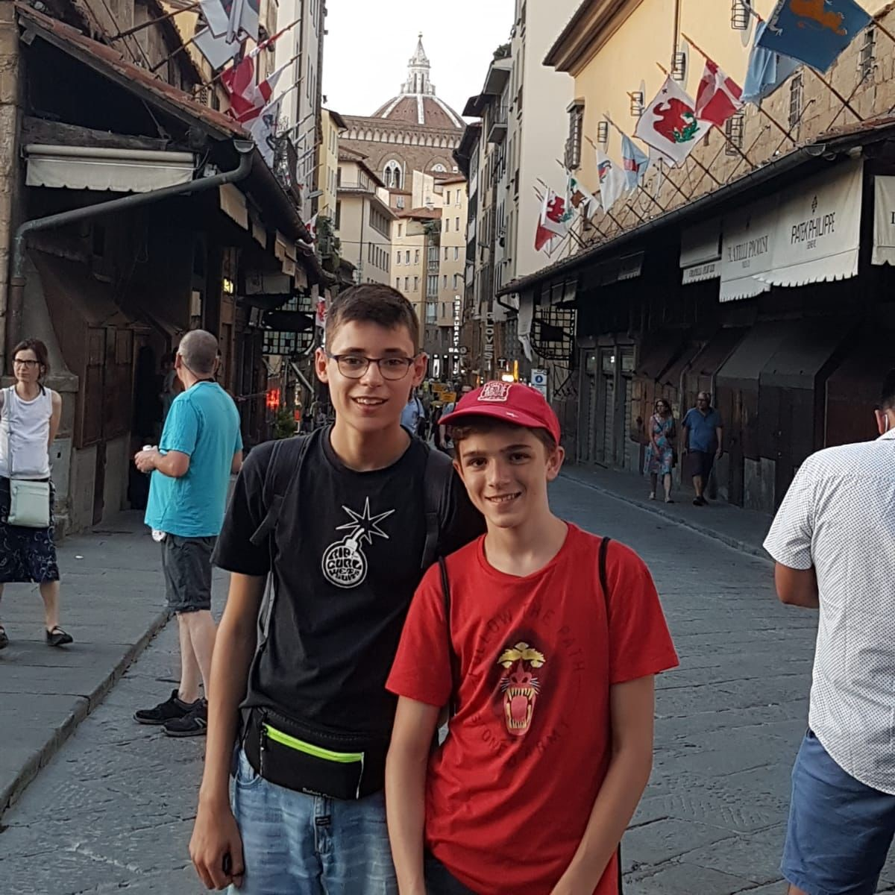
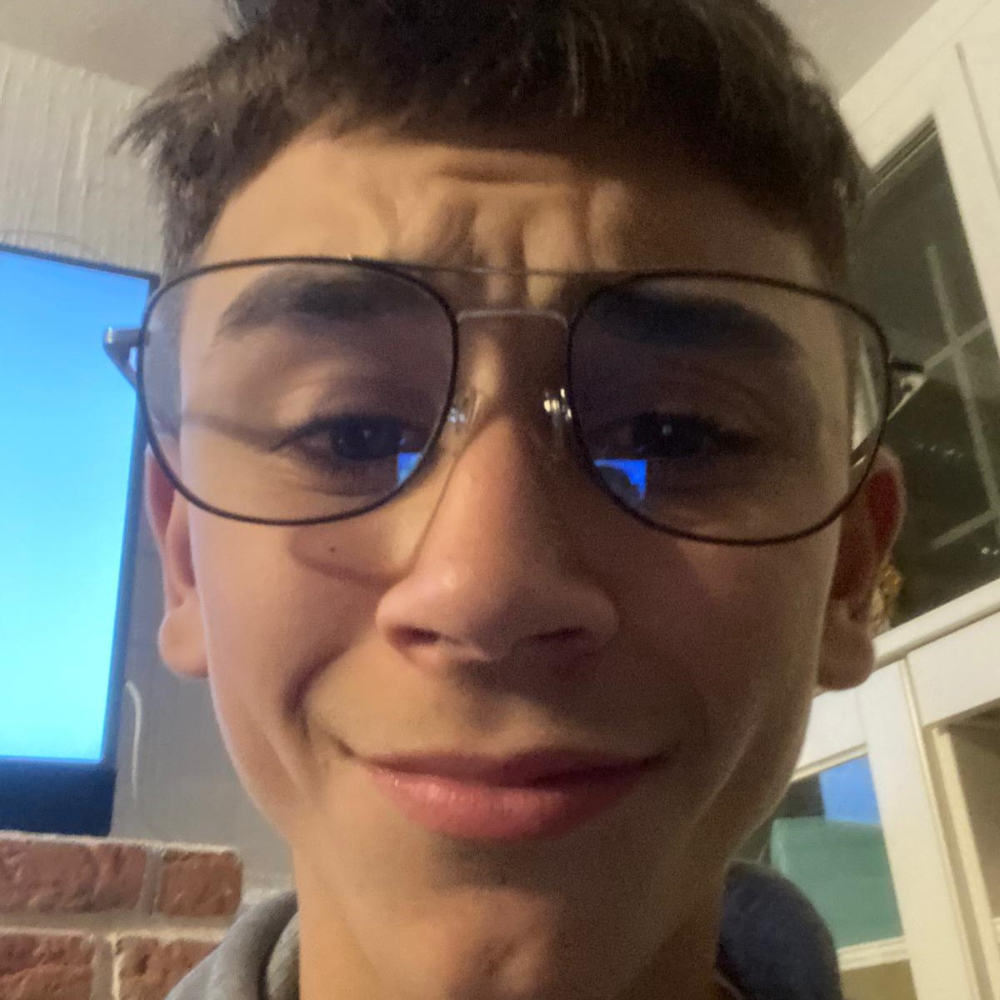
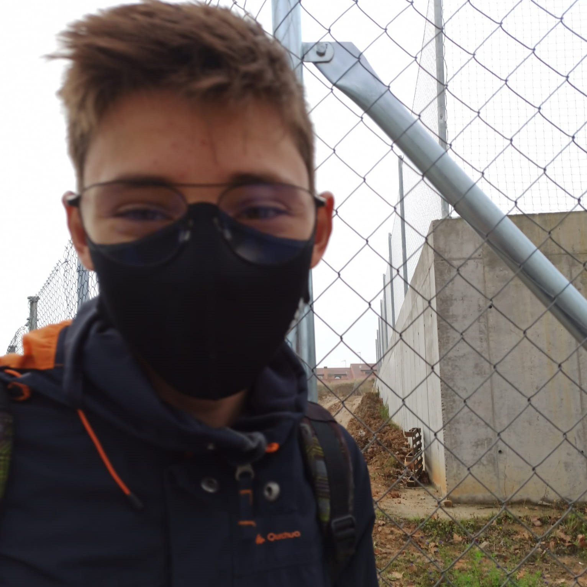
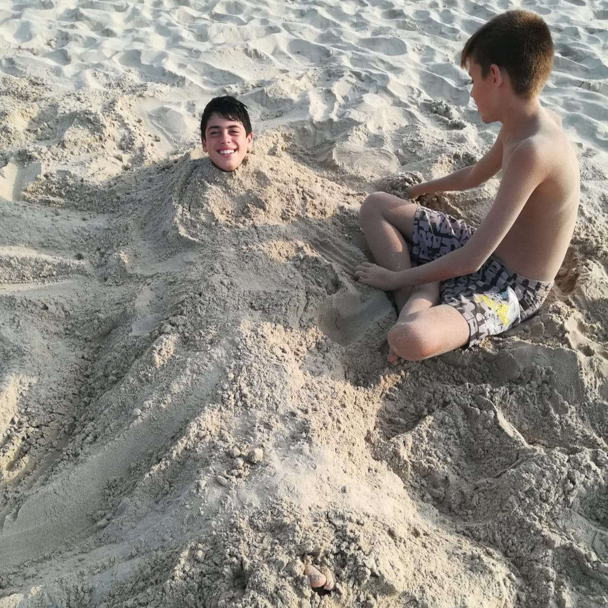

"Pablo, no puedo agradecerte con palabras todo lo que has hecho por mí y por este mundo. Jamás olvidaré aquella vez que salvaste a mi abuela de un incendio, o aquella ocasión en la que diste de comer a un pueblo entero. ¿Cómo podría olvidar ese día en el que construiste pozos de agua por todo África o cuando me sacabas de las clases de catequesis? También está fresco en mi memoria el momento en que Josan intentaba hacernos daño, pero conseguiste detenerlo. Para muchos, tal vez seas solo un hombre común y corriente, pero para mí siempre serás un héroe, el mayor héroe que jamás haya pisado la tierra 😤." | Javi

"Muchísimas felicidades querido Pablo, estamos profundamente orgullosos de ver el hombrecito en el que te has convertido.Dios nos ha bendecido grandemente con el regalo de tu vida y te amamos con todo nuestro alma." | Alicia Y Pablo

"Mil felicidades pabloooooo, te quiero aunque no mucho…. Gracias por enseñarme lo que es un buen hermano, me tienes para todo y que sepas que te defenderé siempre, eres el mejor y que nunca nadie te haga creer lo contrario. Gracias por todo te quiero" | Inés
"La amistad es un tesoro que no pierde su valor, donde puedes ser tú mismo. Un amigo es alguien que te conoce tal y como eres, acepta en quien te has convertido y ese, eres tú." | Lucho

"Si pablito clavó un clavito, puedo yo clavarte un besito?" | Mateo

"Y pensar que al mirar al cielo, una de las estrellas fueras tú Shosta." | Dani

"Felices 19 hermano, disfruta mucho de tu cumple que llegan pronto las vacaciones. Quiero que sepas que eres como un hermano para mi y que estoy para lo que necesites." | Marcos

"Pablo, tú me enseñaste porque el mar está salado, porque todo lo dulce te lo llevaste tú." | Juan

"Para más noches de viernes con cenita del kebab con una de las mejores personas." | David

"Sigue siendo así como eres y no cambies porque quiero que seas el mejor cuñado ytio que conozcan mis hijos" | Vallano